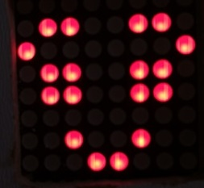
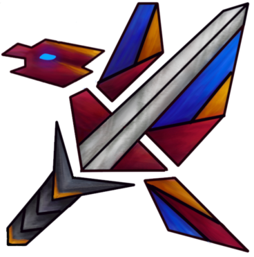

My name is Jakub Kuziemski, but that obviously is on the top of the page. I am 19 yo roboticist... I mean, I wanna be someday. For the time being I am in graduation class in secondary school, and everything what you can see in my portfolio is just a hobbistic great fun. After matura exam I want to study automatic control and robotics at Warsaw univeristy of technology. I know of C++ (and arduino C/C++ variation) very well, including SFML graphic library. As you can see I know the ropes, to web programming, enought to make this website. I have also programmed something in python, C, C#, Java and I would love to learn more! Willingly I will participate in bigger project (contact me).
Tu napisze coś o sobie i będzie gituwa jeszcze troche czasu...
The Music Reactive Lamp bases on a DFRobot's analog sound sensor and an atmega328, connected to a ws2812 RGB LED strip. Depending on a noise level, the LEDs turn on and turn off or change colors. If music is quiet, the lamp shines in blue. After volume increases, lamp shines red, and if it is red for too long it smoothly changes to green. The volume level required to turn red is adjustable with a potentiometer (in case I want to use it both, in a domesticity and at a party). Everything is set up on my prototype board. A frame of the lamp is made with a jar plastered with a bath mat. The control unit is cased, and can be powered with USB or DC input, up to 12V. Three diodes shows, whether power is plugged, whether the logic part is powered, and whether the atmega works properly.
Below you can see photos of the working stage and the inside of the case, but the main thing is the video that shows the Music Reactive Lamp working. Enjoy!
Jack - Inteligent Home assistant

Jack is my biggest project so far. My main goal is to create my own home assistant controlling sockets, lights, and also most of my previous projects. Its to long to read, just watch video and see my first demonstration model. Everything is in a working stage, but I am planning to end Jack this summer.
Ping Pong Led Display
The display is made with ping pong balls(actually halves of them), backlighted with ws2812 diodes. Often, it shows an actual time, which is loaded from DS1307 timer. The module has a small battery, so even if power is off, it knows what time it is. The display can show simple animations also (watch videos). I even tried to program a simple game (google dinosour game), but it is still in progress. Everything is controlled by an atmega328. Controller box has 3 buttons changing modes (the actual time, animations, a timer, dino-game), colors or brightness. In the end, I want it to be connected with "Jack".
CałkaBots
CałkaBots are robots created by me and my friend Jakub Delicat. The first one CałkaBot 1.0 was made in 2018 for miniSUMO competition in UTP in Bydgoszcz. We were first grade students then, and we weren't experienced enough, so it was a huge surprise when we got to a semifinal group. The second one, CałkaBot 2.0, was made the following year and won a special prize in Bydgoszcz. We have been appreciated for the progress and for a PCB board project made by Deli. With both robots, improved to versions 1.1 and 2.1, we have gone to Baltic Robo Battles, to face up univeristy students. We weren't surprised when we have lost most of the battles, but CałkaBots were hard opponent many times. We have even managed to win some of the battles against students of technical universities.
CałkaBots 3d0 and 3k0 are comming.
CałkaBot 1.0
First things first, CałkaBot 1.0 is mostly sponsored by 4th Tadeusz Kościuszko Secondary School. We have used the most common pololu engines, and, like every minisumo robot, IR proximity sensors and transoptors to see the edge of battlefield. Everything is controlled by microcontroller atmega328p and motor driver L298n. Framework of the robot is made with copper plates. Our advantage is having 4 wheels and double front robot. When we reach the border, we don't have to turn around, but simply ride backwards which is now a new forward.
As we have noticed during the competition, our robot was pretty good. It was a competition for school students only, so competitors often have had strange problems, like unnoticing an enemy or an edge. We also have had a nasty problem, which was coused by a low experience level in microcontrollers at the time. Now we are kicking ourselves for not adding a capacitor beetwen the ground and and a resonator, and not adding resitor to 5V. After a powerfull hit, or sometimes even after a quick start, our robot have been restarting himself. But even with this issue we have managed to get to a semifinal group and unluckly we have ended on a second place in this group. It was a huge lesson, and as we got new knowledge, we knew that we would do our best to show of a better side next year.
CałkaBot 1.0 and a working stage, above.
The first two CałkaBot 1.0's figts in Bydgoszcz, below. Against the first enemy, CałkaBot is closer to the cameraman, against the second one, further.
CałkaBot 2.0
Our second mini sumo robot we decided to name CałkaBot 2.0 to honour his predecessor. This time we decided to create our own PCB board, what Deli did. We decided not to change the engines, proximity sensors, and frame. We changed the floor sensor, which was a bad decision (CNY70 were better option). Most articles were sponsored by school as well as the first robot. Now, as we have noticed that CałkaBot 1.0 was not heavy enough, we have put some lead on top as an additional weight. Our robot weighs exacly 500g (thats minisumo's max). After a few test fights between our CałkaBots we realized that the new one is better.
During the competition in Bydgoszcz, we spotted nasty problem. Long story short, when our robot was being hit hard he have bobbed, and becouse of that, he was thinking that an enemy is behind him, so he runned of a ring himself, and lost a few battles becouse of that. We haven't managed to leave a group stage, but our effort has been appreciated by the main sponsor of the competition, so we have won a special prize. CałkaBot 2.0 has fought really well in a few of his fights, so we decided to improve both him, and CałkaBot 1.0, and go to Baltic Robo Battles. There we have met many new people, and gained a lot of experience. We have also confronted technical university students, and sometimes we have won against them. With that huge ammount of new knowledge we have decided not to build a new robot, but two robots, so we could confront them and see clearly all the bad aspects. (facing new version of CałkaBot with the old one is less objective, and the new one always wins).
CałkaBot 2.0 and the working stage, above.
One of the CałkaBot 2.0's fights in Bydgoszcz, below. CałkaBot starts closer to cameraman.
CałkaBot 3k0
We decided to create 2 robots this year, one made by me (3k0 like 3.0 but made by Kivi), one by Deli (3d0). Here I will publish info about mine, so beware. CałkaBot 3k0 is comming
This project is actually more electronic/mechanical, than programming (it is only connected to a bigger programming project). I have made this power supply unit by working two old computer power supllies over. I have used one of them to make voltages(-12V, 3,3V, 5V, 12V), the socond one I have bowelled and used only a frame, which I have cut with my grinder. The power supply has banana plugs, screw connectors and speaker connectors. The most important feature is adjustable (with potentiometer) voltage, made with LM2569. I have also made a small fan (with a switch), to blow out smokes during soldering. Whole power supply can be turned on/off manually or with "Jack".
ARA - chesslike game

ARA is a C++ and SFML game, made by a group of friends during winter holiday in 2019 as a challange to make a game in only two weeks. It's a turn-based game simmilar to chess seemingly, but has huge twists, like different figures' moves, removal of the map or two moves each turn. The rules might be strange and tricky, at first, but after a few games they start to make sense, and you have a lot of fun playing the game. After winter holiday my friends practiclally abandoned the game projects. I am adding new graphics made by, of course, our graphic designer, and still, when I have some free time I am making some improvements. Hope that game will be fully playable and downloadable at the end of 2020.
Main Programmer: Jakub Kuziemski
Programmers: Jakub Delicat Paweł Knut Adam Wieczarek
Main Graphic Designer: Asia Butkiewicz
Graphic Designer: Antonina Smoktunowicz Julia Ciechanowska
Grzesiek - first robot
Grzesiek is my first project. With him, I have falled in love with robotics, electronics, and programming. There were actually 2 versons of the robot. First one I have made in 2017 for the end of my middle school (I have this on my diploma). There is nothing to boast about, becouse I was 16 and code is crap for me now. But videos are cute and memorable. Second version of Grzesiek was abandoned (stripped and cased), but I hope that one day I will have enought time for him.
The very first version of Grzesiek below, and the last above.


 CałkaBot 2.0 and the working stage, above.
CałkaBot 2.0 and the working stage, above.